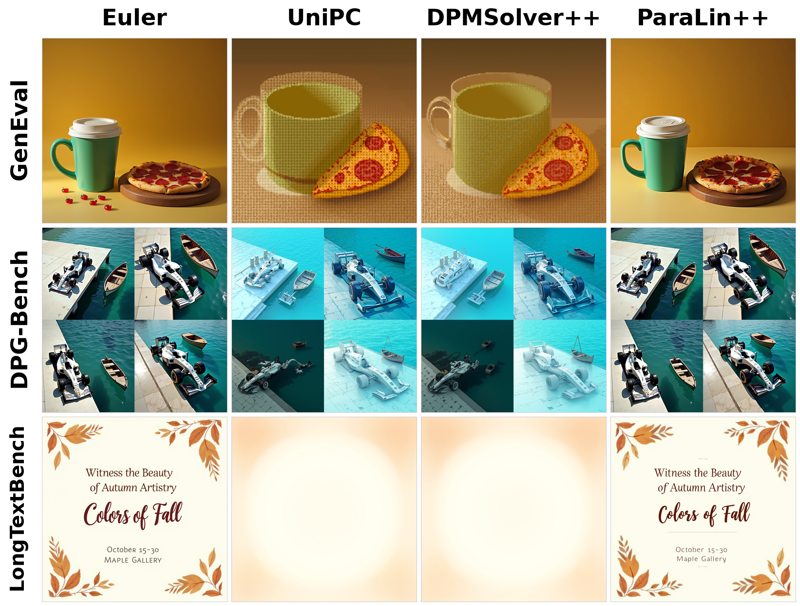
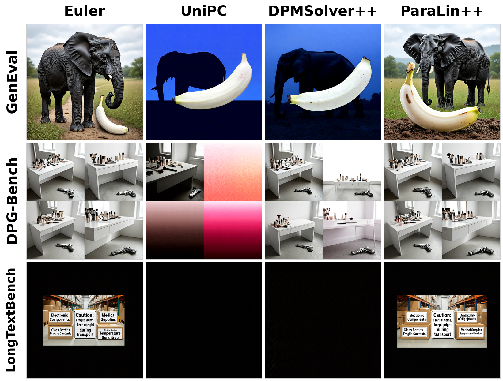
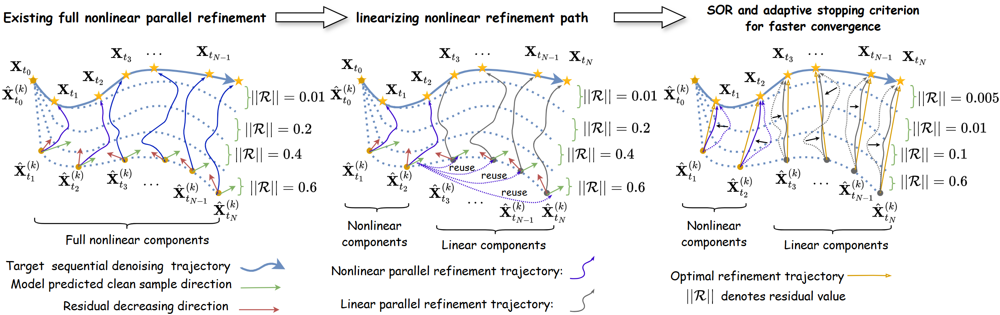

Few-step solvers that look “quality-lossless” under FID are not production-ready. Training-free few-step samplers (DDIM, DPM-Solver++, UniPC) are certified almost exclusively with distributional proxies (FID) and coarse text–image similarity (CLIP). When audited on the quality axes a production text-to-image service actually cares about — semantic composition (GenEval), dense instruction following (DPG-Bench), and long in-image text rendering (LongTextBench) — they degrade sharply while their FID stays within 0.03 of the full-step reference. Our step-parity solver ParaLin++ instead keeps all discrete steps and removes only the sequential latency, preserving the Euler-level industrial profile.
A survey of training-free acceleration evaluations (DDPM, DDIM, DPM-Solver++, UniPC, Restart, ParaDiGMS, …) shows they stop at simple proxies:
These metrics are outdated for production: they cannot see sample-level semantics, dense instructions, aesthetics, or in-image text.
Post-trained industrial generators are judged on a deeper profile:
We audit headline few-step claims on FLUX.1-dev and Ming-Flash-Omni 2.0 under exactly these axes.
On FLUX.1-dev, 16-step UniPC / DPM-Solver++ stay within 0.03 FID of the 30-step Euler reference, yet collapse on the industrial profile. ParaLin++ keeps all 30 steps, parallelizes the solve, and preserves the Euler-level quality while being faster.
| Method | Regime | Steps | FID ↓ | GenEval ↑ | DPG-Bench ↑ | LongTextBench ↑ | Speedup ↑ |
|---|---|---|---|---|---|---|---|
| Euler (reference) | Sequential | 30 | 59.96 | 0.66 | 83.97 | 0.27 | 1.00× |
| UniPC | Few-step | 16 | 59.99 | 0.52 (−21%) | 77.46 (−6.5) | 0.09 (−67%) | 1.81× |
| DPM-Solver++ | Few-step | 16 | 59.97 | 0.50 (−24%) | 75.75 (−8.2) | 0.08 (−70%) | 1.85× |
| ParaLin++ (ours) | Step-parity parallel | 30 | 59.94 | 0.64 | 84.24 | 0.26 | 1.68× |
Table: industrial-benchmark audit on FLUX.1-dev. Speedup measured on the same GenEval generation pass against the 30-step Euler reference, excluding model loading and scoring.
The same pattern holds across guidance strengths (CFG 0–14) and on Ming-Flash-Omni 2.0, where ParaLin++ keeps the Euler-level profile (GenEval 0.87 vs. 0.88; DPG-Bench 86.99 vs. 86.86; LongTextBench 0.95 vs. 0.95) at 1.21×.


Instead of shortening the discretization, keep the complete N-step system and solve its coupled integration equations in parallel. ParaLin++ strengthens our conference ParaLin with four components:

Theory: an accumulated error bound to the exact sequential trajectory and convergence of the iteration to the ϱ-nonlinear surrogate system within K ≤ N iterations.
@article{lu2026paralinpp,
title = {Back to the Drawing Board: A Critical Evaluation of Few-Step Solvers
for Production Diffusion Models},
author = {Lu, Jianrong and Zhu, Zhiyu and Liu, Hui and Hou, Junhui},
journal = {arXiv preprint},
year = {2026}
}
🚧 Code and full experiment configs are being cleaned for release on this repository. The conference version (ParaLin / ParaSolver) is available at github.com/Jianrong-Lu/ParaSolver.